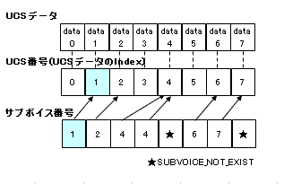
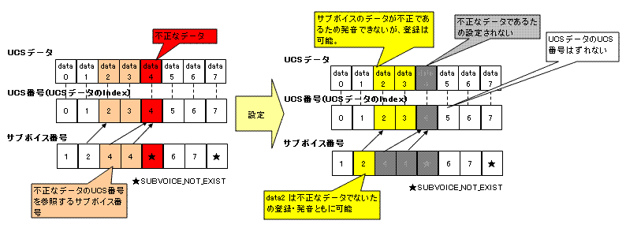

com.docomostar.opt.ui.Synthesizer
com.docomostar.opt.ui.Synthesizer
|
||||||||||
| 前のクラス 次のクラス | フレームあり フレームなし | |||||||||
| 概要: 入れ子 | フィールド | コンストラクタ | メソッド | 詳細: フィールド | コンストラクタ | メソッド | |||||||||
Object
シンセサイザ操作機能を利用するためのオーディオプレゼンタです。 音源デバイスへの UCS(User Customize Sound) データの設定と、メッセージによるリアルタイム発音が可能です。
メッセージによるリアルタイム発音の手順は次のようになります。
始めに play() により音源デバイスをメッセージ受付中状態にします。
受付中状態でsendMessage(byte[], int, int) により音源デバイスへメッセージを発行します。
最後に stop() により音源デバイスのメッセージ受付を停止し初期状態に戻します。
なお、これらのメソッドによるシンセサイザ操作機能の状態遷移は以下になります。
(表中の括弧内について、スラッシュの前は具体的な処理を、スラッシュの後は次に遷移する状態を示しています。)
受付中状態でアプリケーションがサスペンドした場合、停止処理が行われます。
すなわち、stop() メソッドが呼ばれたのと同じ状態になります。
| ――――― | play呼出 |
stop呼出 |
サスペンド |
|---|---|---|---|
| 初期状態 | 準備処理/ 受付中 |
NOP/--- | NOP/--- |
| 受付中 | --- | 停止処理/ 初期状態 |
停止処理/ 初期状態 |
このクラスではシンセサイザ操作機能に必要ないメソッドの利用は制限されています。 詳細は、各メソッドの説明を参照してください。
シンセサイザ機能同士の同時利用ができないことを除き、 原則として、同時利用における動作は、AudioPresenter と同様です。 AudioPresenter または AudioTrackPresenter との同時利用における、 このプレゼンタのデフォルトの利用優先順位は AudioPresenter.NORM_PRIORITY です。 ポート指定がない場合、およびポート指定がある場合、 これらのインスタンスが混在した場合の動作についても AudioPresenter と同様です。 以下に AudioPresenter、AudioTrackPresenter との同時利用における補足を示します。
このプレゼンタは AudioPresenter との同時利用をサポートします。
このプレゼンタの利用時における AudioPresenter の並列再生可能数は機種依存です。 このプレゼンタと AudioPresenter をあわせた同時利用可能数が、 AudioPresenter クラスに記述されているミニマムスペック未満となる場合も有り得ます。
このプレゼンタと AudioTrackPresenter の同時利用をサポートしているかどうかは機種依存です。
サポートしていない場合は、同時利用可能数が 1 であるとみなします。 また、サポートしている場合、 このプレゼンタの利用時における AudioTrackPresenter の並列再生可能数は機種依存です。 このプレゼンタと AudioTrackPresenter をあわせた同時利用可能数が、 AudioPresenter クラスに記述されているミニマムスペック未満となる場合も有り得ます。
シンセサイザ操作機能における注意事項
音源デバイスへ UCS を設定する場合には、 端末の音源デバイスに対応した UCS データを作成する MFi オーサリングツールが必要です。
音源デバイスへ発行するメッセージのフォーマットは、端末の音源デバイスに対応したフォーマットです。 MIDI メッセージと異なる点に留意してください。
| フィールドの概要 | |
static byte |
BANK_3POLY
音色バンクの 1 つで、３和音を表します (=125)。 |
static byte |
BANK_DRUM
音色バンクの 1 つで、ドラムセットを表します (=120)。 |
static byte |
BANK_GM
音色バンクの 1 つで、GMを表します (=121)。 |
static byte |
BANK_SE
音色バンクの 1 つで、効果音を表します (=20)。 |
static byte |
BANK_UCS
音色バンクの 1 つで、UCS を表します (=17)。 |
static byte |
COMMAND_ALL_NOTE_OFF
メッセージの 1 つで、全音ノートオフコマンドを表します (=12)。 |
static byte |
COMMAND_ALL_SOUND_OFF
メッセージの 1 つで、全音消音コマンドを表します (=11)。 |
static byte |
COMMAND_BALANCE
メッセージの 1 つで、ステレオバランス設定コマンドを表します (=6)。 |
static byte |
COMMAND_BANK_SELECT
メッセージの 1 つで、音色バンク変更コマンドを表します (=2)。 |
static byte |
COMMAND_EXPRESSION
メッセージの 1 つで、エクスプレッション設定コマンドを表します (=5)。 |
static byte |
COMMAND_HOLD
メッセージの 1 つで、サステインレベル維持コマンドを表します (=10)。 |
static byte |
COMMAND_MASTER_BALANCE
メッセージの 1 つで、マスターステレオバランス設定コマンドを表します (=15)。 |
static byte |
COMMAND_MASTER_VOLUME
メッセージの 1 つで、マスター音量設定コマンドを表します (=14)。 |
static byte |
COMMAND_MODULATION
メッセージの 1 つで、モジュレーションデプス設定コマンドを表します (=7)。 |
static byte |
COMMAND_NOTE_OFF
メッセージの 1 つで、ノートオフコマンドを表します (=1)。 |
static byte |
COMMAND_NOTE_ON
メッセージの 1 つで、ノートオンコマンドを表します (=0)。 |
static byte |
COMMAND_PITCHBEND
メッセージの 1 つで、ピッチベンド設定コマンドを表します (=8)。 |
static byte |
COMMAND_PITCHBEND_RANGE
メッセージの 1 つで、ピッチベンドレンジ設定コマンドを表します (=9)。 |
static byte |
COMMAND_PROGRAM_CHANGE
メッセージの 1 つで、プログラム変更コマンドを表します (=3)。 |
static byte |
COMMAND_RESET_CONTROLLER
メッセージの 1 つで、コントロールチェンジ設定初期化コマンドを表します (=13)。 |
static byte |
COMMAND_VOLUME
メッセージの 1 つで、ボリューム設定コマンドを表します (=4)。 |
static byte |
SUBVOICE_NOT_EXIST
サブボイス情報がないことを表します (=-1)。 |
| コンストラクタの概要 | |
protected |
Synthesizer()
アプリケーションが直接このクラスのインスタンスを生成することはできません。 |
| メソッドの概要 | |
static int |
getAvailableMessageNum()
一度に発行できるメッセージの上限数を取得します。 |
static int |
getAvailableUCSDataNum()
設定できる UCS データの上限数を取得します。 |
static int |
getAvailableUCSDataSize()
設定できる UCS データに含まれる Wave データの合計上限サイズを取得します。 |
com.docomostar.media.MediaResource |
getMediaResource()
このクラスのインスタンスに対して呼び出すことはできません。 |
static Synthesizer |
getSynthesizer()
シンセサイザ操作機能オブジェクトを取得します。 |
static Synthesizer |
getSynthesizer(int port)
発音するポート番号を指定してシンセサイザ操作機能オブジェクトを取得します。 |
void |
play()
メッセージの受付を開始します。 |
void |
sendMessage(byte[] data,
int offset,
int length)
単一もしくは複数のメッセージを発行します。 |
void |
setAttribute(int attr,
int value)
発音に関する属性値を設定します。 |
void |
setMediaListener(com.docomostar.ui.MediaListener listener)
このクラスのインスタンスに対して呼び出すことはできません。 |
static void |
setUCSData(byte[][] ucsData,
byte[] subVoiceNo)
シンセサイザ操作機能で利用する UCS データを音源デバイスへ登録します。 |
void |
stop()
メッセージの受付を停止します。 |
| クラス Object から継承したメソッド |
equals, getClass, hashCode, notify, notifyAll, toString, wait, wait, wait |
| フィールドの詳細 |
public static final byte COMMAND_NOTE_ON
| チャンネル指定 | データ 0 値域 | データ 1 値域 | データ 2 値域 |
|---|---|---|---|
| ○ | key (21〜120) |
velocity (0〜127) |
― |
public static final byte COMMAND_NOTE_OFF
| チャンネル指定 | データ 0 値域 | データ 1 値域 | データ 2 値域 |
|---|---|---|---|
| ○ | key (21〜120) |
― | ― |
public static final byte COMMAND_BANK_SELECT
| チャンネル指定 | データ 0 値域 | データ 1 値域 | データ 2 値域 |
|---|---|---|---|
| ○ | bank (0〜127) |
― | ― |
BANK_GM,
BANK_DRUM,
BANK_3POLY,
BANK_SE,
BANK_UCS,
定数フィールド値public static final byte COMMAND_PROGRAM_CHANGE
| チャンネル指定 | データ 0 値域 | データ 1 値域 | データ 2 値域 |
|---|---|---|---|
| ○ | prog (0〜127) |
― | ― |
public static final byte COMMAND_VOLUME
| チャンネル指定 | データ 0 値域 | データ 1 値域 | データ 2 値域 |
|---|---|---|---|
| ○ | volume (0〜127) |
― | ― |
public static final byte COMMAND_EXPRESSION
| チャンネル指定 | データ 0 値域 | データ 1 値域 | データ 2 値域 |
|---|---|---|---|
| ○ | expression (0〜127) |
― | ― |
public static final byte COMMAND_BALANCE
| チャンネル指定 | データ 0 値域 | データ 1 値域 | データ 2 値域 |
|---|---|---|---|
| ○ | pan (0〜127) |
― | ― |
public static final byte COMMAND_MODULATION
| チャンネル指定 | データ 0 値域 | データ 1 値域 | データ 2 値域 |
|---|---|---|---|
| ○ | modulation (0〜127) |
― | ― |
public static final byte COMMAND_PITCHBEND
| チャンネル指定 | データ 0 値域 | データ 1 値域 | データ 2 値域 |
|---|---|---|---|
| ○ | pitchbend(MSB) (0〜127) |
pitchbend(LSB) (0〜127) |
― |
public static final byte COMMAND_PITCHBEND_RANGE
| チャンネル指定 | データ 0 値域 | データ 1 値域 | データ 2 値域 |
|---|---|---|---|
| ○ | pitchbendSense (0〜24) |
― | ― |
public static final byte COMMAND_HOLD
| チャンネル指定 | データ 0 値域 | データ 1 値域 | データ 2 値域 |
|---|---|---|---|
| ○ | hold (0〜127) |
― | ― |
public static final byte COMMAND_ALL_SOUND_OFF
| チャンネル指定 | データ 0 値域 | データ 1 値域 | データ 2 値域 |
|---|---|---|---|
| ○ | ― | ― | ― |
public static final byte COMMAND_ALL_NOTE_OFF
| チャンネル指定 | データ 0 値域 | データ 1 値域 | データ 2 値域 |
|---|---|---|---|
| ○ | ― | ― | ― |
public static final byte COMMAND_RESET_CONTROLLER
| チャンネル指定 | データ 0 値域 | データ 1 値域 | データ 2 値域 |
|---|---|---|---|
| ○ | ― | ― | ― |
public static final byte COMMAND_MASTER_VOLUME
| チャンネル指定 | データ 0 値域 | データ 1 値域 | データ 2 値域 |
|---|---|---|---|
| ― | volume (0〜127) |
― | ― |
public static final byte COMMAND_MASTER_BALANCE
| チャンネル指定 | データ 0 値域 | データ 1 値域 | データ 2 値域 |
|---|---|---|---|
| ― | balance (0〜127) |
― | ― |
public static final byte BANK_GM
public static final byte BANK_DRUM
public static final byte BANK_3POLY
public static final byte BANK_SE
public static final byte BANK_UCS
public static final byte SUBVOICE_NOT_EXIST
| コンストラクタの詳細 |
protected Synthesizer()
| メソッドの詳細 |
public static Synthesizer getSynthesizer()
このメソッドによって得られたオブジェクトには、 MediaSound を設定することはできませんが、音源デバイスへ直接メッセージを 発行することでリアルタイムな発音が行えます。
シンセサイザ操作機能同士は、同時利用の対象外です。
そのため、このメソッドを複数回呼び出した場合、
常に同じオブジェクトへの参照が返されます。
ただし、getSynthesizer(int port) は、このメソッドとは異なるオブジェクトを返します。
com.docomostar.lang.UnsupportedOperationException -
public static Synthesizer getSynthesizer(int port)
このメソッドによって得られたオブジェクトには、 MediaSound を設定することはできませんが、音源デバイスへ直接メッセージを 発行することでリアルタイムな発音が行えます。
シンセサイザ操作機能同士は、同時利用の対象外です。
そのため、このモデルでは、引数 port に指定できるポート番号は 0 だけです。
このメソッドを複数回呼び出した場合、常に同じオブジェクトへの参照が返されます。
ただし、getSynthesizer() は、このメソッドとは異なるオブジェクトを返します。
port - ポート番号を指定します。
com.docomostar.lang.UnsupportedOperationException -
IllegalArgumentException -
public void play()
このメソッドはブロッキングメソッドです。 メッセージ受付準備完了後、受付中状態に遷移し、このメソッドは復帰します。
このメソッドの呼び出し中にアプリケーションがサスペンドした場合、例外 UIException(INTERRUPTED) が発生します。 この場合、アプリケーションのレジューム後、このメソッドのリトライが可能です。
受付中状態でこのメソッドが呼ばれた場合は呼び出しを無視します。
com.docomostar.ui.MediaPresenter 内の playcom.docomostar.ui.UIException - com.docomostar.ui.UIException - com.docomostar.ui.UIException - com.docomostar.ui.UIException - com.docomostar.ui.UIException - com.docomostar.ui.UIException - public void stop()
このメソッドはブロッキングメソッドです。 メッセージ受付停止完了後、初期状態に遷移し、このメソッドは復帰します。
メッセージ受付中状態でないときにこのメソッドが呼ばれた場合は、呼び出しを無視します。
com.docomostar.ui.MediaPresenter 内の stop
public void setAttribute(int attr,
int value)
AudioPresenter で定義されている以下の属性の設定が可能です。 これら以外の属性が指定された場合は何も行わずに無視されます。 なお、設定可能な属性値は AudioPresenter の各属性で規定されている属性値です。
AudioPresenter.SET_VOLUMEAudioPresenter.PRIORITY
com.docomostar.ui.MediaPresenter 内の setAttributeattr - 設定する属性を指定します。value - 設定する属性の値を指定します。
IllegalArgumentException -
public static void setUCSData(byte[][] ucsData,
byte[] subVoiceNo)
初期状態(play メソッド呼び出し前)にこのメソッドを呼び出し、UCS データを音源デバイスへ登録します。 なお、初期状態以外の状態でこのメソッドを呼んだ場合は、次回の play メソッド呼び出し時に反映されます。
音源デバイスのデフォルト状態では音源デバイス内蔵音のみを使用します。 UCS データが音源デバイスに登録されている場合、引数 ucsData、 subVoiceNo 共に null を指定することで、音源デバイスから UCS データをクリアし、音源デバイス内蔵音のみを使用するデフォルトの状態に戻すことが可能です。 なお、アプリケーション終了時にも UCS データをクリアし、音源デバイスをデフォルト状態にします。
ucsData[m] と subVoiceNo[m] (m は任意のインデックス) によって、 メインボイスとサブボイスから成る 1 対の UCS データを表します。 ucsData[m] の インデックス m は UCS データ番号として使用します。
ucsData[m] には、この端末に対応した MFi オーサリングツール によって作成した UCS データ ファイルのバイナリを指定します。 UCS データ ファイルには、通常メインボイスとサブボイスが格納されますが、 ucsData[m] には 1 つのメインボイスの Wave データしか設定することができません。 シンセサイザ操作機能では、引数 subVoiceNo を用いて、サブボイスとメインボイスの依存関係を構築します。
subVoiceNo[m] には、 サブボイス番号として UCS データ番号 n(m ≠ n) を指定します。 メインボイスの UCS データである ucsData[m] に、 サブボイスの UCS データとなる ucsData[n] を関連付けます。 なお、サブボイスが不要な場合には、引数 subVoiceNo[m] に
SUBVOICE_NOT_EXIST または、
subVoiceNo[m] に対応する UCS データ番号 m を指定します。
具体例として、下図を示します。

図で示したメインボイスとサブボイスの依存関係は以下になります。
音源デバイスへ登録できない UCS データが含まれている場合の動作を以下に示します。
不正な UCS データが存在した場合の具体例を以下に示します。 下図の場合、data2、 data3 は不正なサブボイスを持つため発音できませんが、 data1 のサブボイスである『data2 のメインボイスデータ部分』は正常なので、 data1 は発音可能です。

このメソッドに UCS データを指定した具体例を示します。
// 1 つの UCS データを表すucsData
byte[][] ucsDataOK1 = new byte[]{ new byte[]{ ... } };
// 複数の UCS データを表す ucsData
byte[][] ucsDataOK2 = new byte[]{ new byte[]{ ... }, new byte[]{ ... }, ... };
// null配列を含む不正な ucsData
byte[][] ucsDataNG = new byte[]{ new byte[]{ ... }, null, ... };
// 1 つの UCS データを設定する場合
ap.setUCSData(ucsDataOK1, new byte[]{ 0 });
// 複数の UCS データを設定する場合
ap.setUCSData(ucsDataOK2, new byte[]{ 1, Synthesizer.SUBVOICE_NOT_EXIST, ... });
// UCS を利用しない場合
ap.setUCSData(null, null);
このメソッドにおける注意事項
音源デバイスでアライメントを行うため、
UCS データに含まれる Wave データをパディングすることがあります。
setUCSData(byte[][], byte[]) に複数の UCS データを設定する場合、
実際に設定可能な Wave データの合計上限サイズは、
getAvailableUCSDataSize()
で取得したサイズよりも若干小さくなることがあります。
UCS データ ファイルに含まれるサブボイスの Wave データも、 UCS データに含まれる Wave データ部の合計サイズのカウント対象です。 MFi オーサリングツール で UCS データ ファイルを作成する際はご留意ください。
ucsData - UCS データを指定します。
UCS を使用しない場合は null を指定します。subVoiceNo - 各 UCS データのサブボイスを UCS 番号で指定します。
UCS を使用しない場合は null を指定します。SUBVOICE_NOT_EXIST,
getAvailableUCSDataNum(),
getAvailableUCSDataSize()
com.docomostar.lang.UnsupportedOperationException -
NullPointerException -
com.docomostar.ui.UIException -
public void sendMessage(byte[] data,
int offset,
int length)
引数 data にメッセージを含むバイナリデータを指定します。 引数 offset から 引数 length 分のメッセージを発行することが可能です。
シンセサイザ操作機能においては、MIDI メッセージとは異なり、 1 メッセージは 5byte で構成されています。 下表に 引数 offset = 0 における i 番目のメッセージの具体例を示します。
| data[i + 0] | コマンド種別 |
|---|---|
| data[i + 1] | 制御対象チャンネル |
| data[i + 2] | データ 0 |
| data[i + 3] | データ 1 |
| data[i + 4] | データ 2 |
コマンド種別には、このクラスのフィールド COMMAND_* を指定します。 制御対象チャンネルは、標準で 0 〜 15 の 16 チャンネルを指定できます。 それ以上のチャンネルをサポートしているかどうかは端末に依存します。 ただし、全チャンネルが対象のメッセージの場合は、 チャンネルの指定は無視されますので、何を指定しても構いません。 データ 0 〜 2 は、コマンド種別にあわせて様々な値を指定することができます。 データの指定の詳細は COMMAND_* を参照してください。
音源デバイスに対して一度に発行できるメッセージの上限数は端末に依存します。 上限数を超えたメッセージを無視します。
発行する各メッセージにおいて、「制御対象チャンネル」の値は 0x0F で、 「データ0」「データ1」「データ2」の値は 0x7F で、 それぞれマスクされてから(ビット論理積を取ってから)解釈されます。 マスク処理後でもなお、 発行するメッセージに不正なメッセージが含まれていた場合は、 不正なメッセージだけを無視します。 このメソッドでは、例外は発生せず、不正なメッセージを除く正常なメッセージを音源デバイスへ発行します。
このインスタンスが受付中状態以外の状態で、 このメソッドが呼ばれた場合は、例外 UIException(ILLEGAL_STATE) が発生します。
data - メッセージデータ群を指定します。
nullが指定された場合は何も処理されません。offset - メッセージデータ群の処理開始位置を指定します。length - 処理を行うバイト列の長さを指定します。
0が指定された場合は何も処理されません。COMMAND_NOTE_ON,
COMMAND_NOTE_OFF,
COMMAND_BANK_SELECT,
COMMAND_PROGRAM_CHANGE,
COMMAND_VOLUME,
COMMAND_EXPRESSION,
COMMAND_BALANCE,
COMMAND_MODULATION,
COMMAND_PITCHBEND,
COMMAND_PITCHBEND_RANGE,
COMMAND_HOLD,
COMMAND_ALL_SOUND_OFF,
COMMAND_ALL_NOTE_OFF,
COMMAND_RESET_CONTROLLER,
COMMAND_MASTER_VOLUME,
COMMAND_MASTER_BALANCE,
getAvailableMessageNum()
IndexOutOfBoundsException -
IllegalArgumentException -
com.docomostar.ui.UIException - public static int getAvailableUCSDataNum()
上限数は機種依存です。
setUCSData(byte[][], byte[])public static int getAvailableUCSDataSize()
合計上限サイズは機種依存です。
UCS データ ファイルのサイズではなく、中に含まれる Wave データ部分のサイズであることに注意してください。
UCS データ ファイルについては、setUCSData(byte[][], byte[]) を参照してください。
setUCSData(byte[][], byte[])public static int getAvailableMessageNum()
上限数は機種依存です。
sendMessage(byte[], int, int)public com.docomostar.media.MediaResource getMediaResource()
com.docomostar.ui.MediaPresenter 内の getMediaResourcecom.docomostar.lang.UnsupportedOperationException -
public void setMediaListener(com.docomostar.ui.MediaListener listener)
com.docomostar.ui.MediaPresenter 内の setMediaListenerlistener - 指定に意味を持ちません。
com.docomostar.lang.UnsupportedOperationException -
|
||||||||||
| 前のクラス 次のクラス | フレームあり フレームなし | |||||||||
| 概要: 入れ子 | フィールド | コンストラクタ | メソッド | 詳細: フィールド | コンストラクタ | メソッド | |||||||||
NTT DOCOMO,INC.
本製品または文書は著作権法により保護されており、その使用、複製、再頒布および逆コンパイルを制限するライセンスのもとにおいて頒布されます。NTTドコモ（その他に許諾者がある場合は当該許諾者も含めて）の書面による事前の許可なく、本製品および関連する文書のいかなる部分も、いかなる方法によっても複製することが禁じられます。フォントを含む第三者のソフトウェアは、著作権法により保護されており、その提供者からライセンスを受けているものです。
Sun、Sun Microsystems、Java、J2MEおよびJ2SEは、米国およびその他の国における米国 Sun Microsystems,Inc.の商標または登録商標です。サンのロゴマークは、米国 Sun Microsystems, Inc.の登録商標です。
FeliCaは、ソニー株式会社が開発した非接触ICカードの技術方式です。FeliCaは、ソニー株式会社の登録商標です。
「ｉモード」、「ｉアプリ／アイアプリ」、「ｉ-αppli」ロゴ、「DoJa」はNTTドコモの商標または登録商標です。
その他記載された会社名、製品名などは該当する各社の商標または登録商標です。